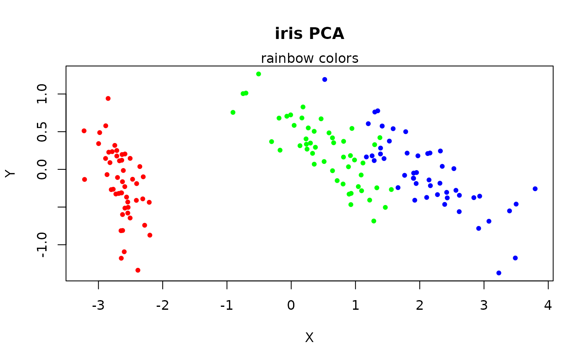
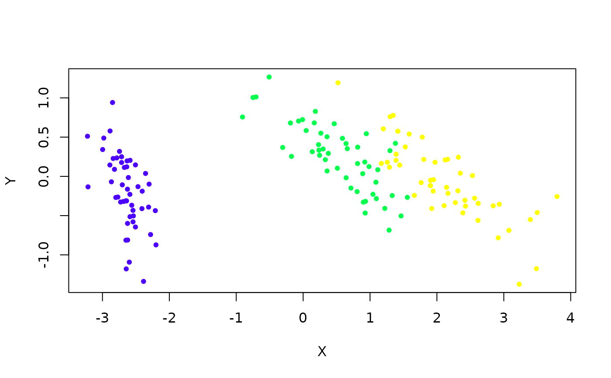
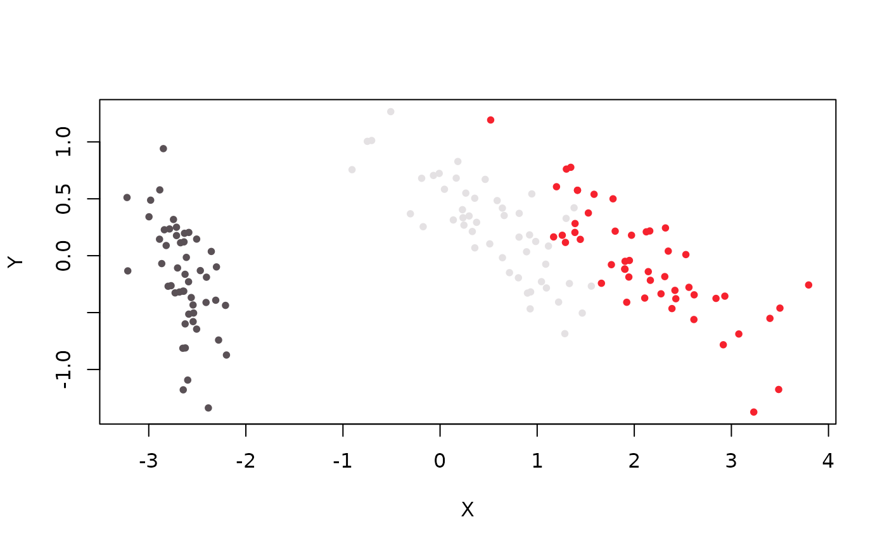
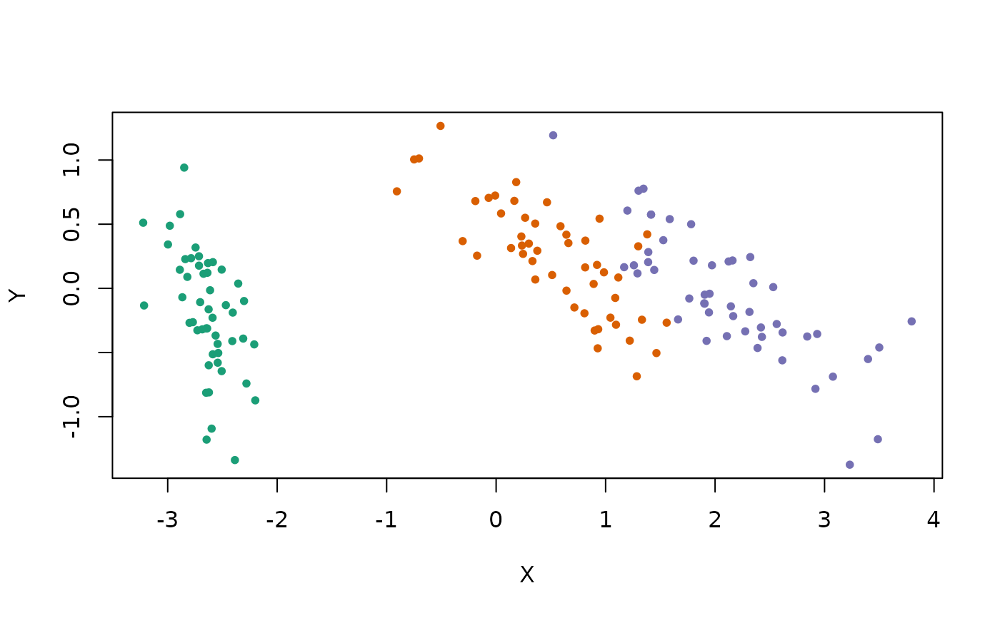
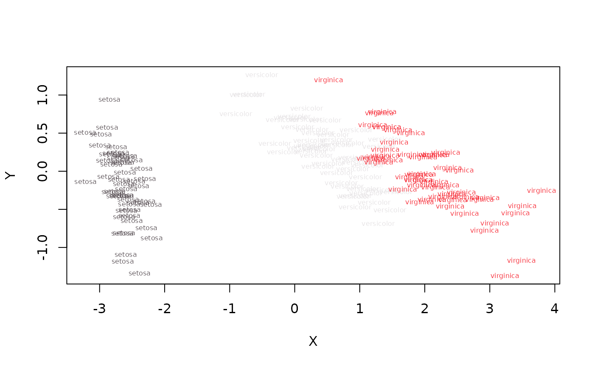
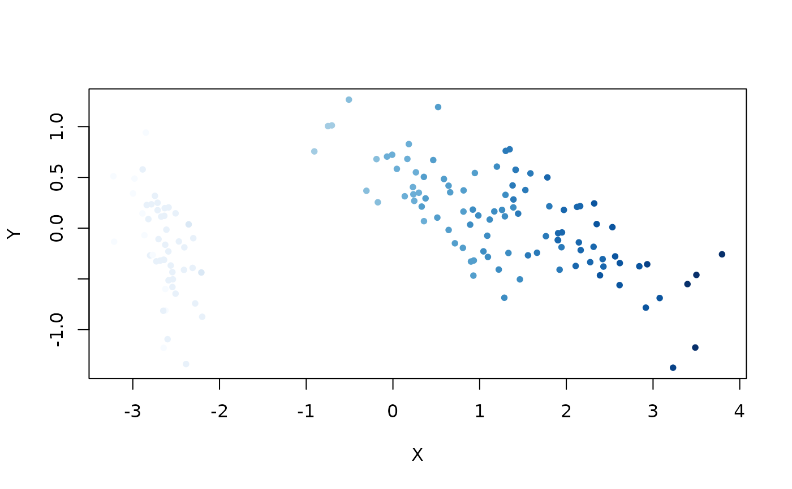
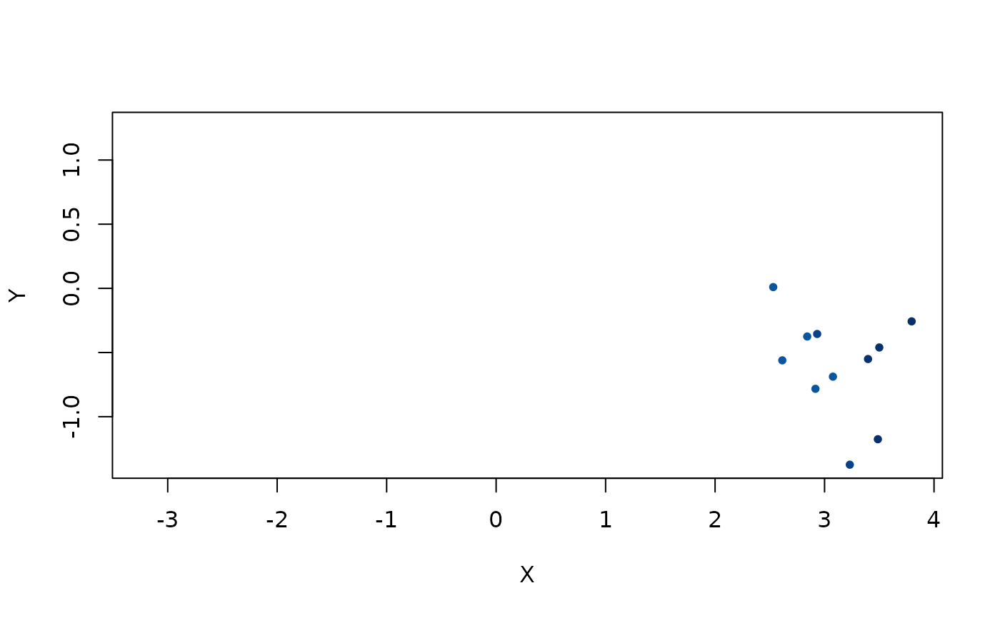
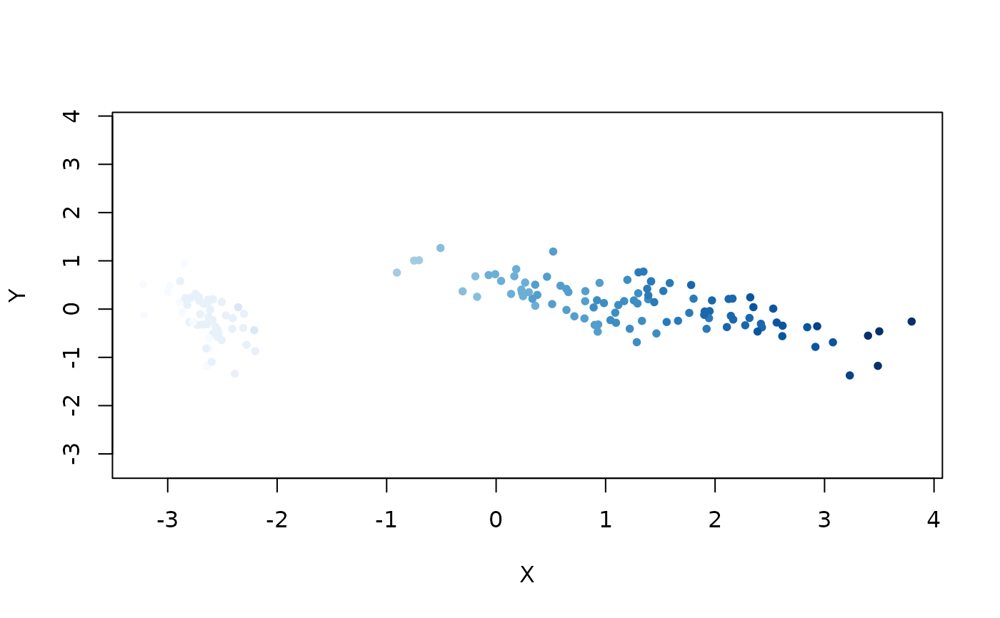

Plots the embedded coordinates, with each point colored by a specified color.
Usage
embed_plot(
coords,
x = NULL,
colors = NULL,
color_scheme = NULL,
num_colors = 15,
alpha_scale = 1,
limits = NULL,
top = NULL,
cex = 1,
title = NULL,
text = NULL,
sub = NULL,
equal_axes = FALSE,
pc_axes = FALSE,
xlim = NULL,
ylim = NULL,
show_axes = TRUE,
NA_color = NULL,
rev = FALSE,
verbose = FALSE
)Arguments
- coords
Matrix of embedded coordinates, with as many rows as observations, and 2 columns.
- x
Either a data frame or a column that can be used to derive a suitable vector of colors. Ignored if
colorsis provided.- colors
A single color or one color per observation.
- color_scheme
A color scheme. See Details. Ignored if
colorsis specified.- num_colors
Number of distinct colors to use in the palette, when
xis a numeric vector, on the assumption that the palette is continuous (which it probably should be). Ignored ifxis not a numeric vector. If set toNULL, it will be set tolength(x).- alpha_scale
Scale the opacity alpha of the colors, between 0 and 1. Useful for increasing the transparency of points, especially with large plots with lots of overlap.
- limits
The range that the colors should map over when mapping from a numeric vector. If not specified, then the range of
x. This is useful if there is some external absolute scale that should be used. Ignored ifxis not a numeric vector.- top
If not
NULL, only this many finite values from a directly supplied numericxare displayed. Values are selected in decreasing order with existing row order breaking ties.- cex
Size of the points. Ignored if
textis provided.- title
Title for the plot.
- text
Vector of label text to display instead of a point. If the labels are long or the data set is large, this is unlikely to be very legible, but is occasionally useful.
- sub
Subtitle for the plot. Appears below the title.
- equal_axes
If
TRUE, use a common coordinate range and equal physical units on the X and Y axes.- pc_axes
If
TRUE, thecoordsare replaced by the first two (unscaled) principal components, which should have the effect of rotating the data (with a potential reflection) so the main variance aligns along the X-axis. Should not have any other scaling effect.- xlim
Vector of two numeric values to give the numeric extent of the X-axis after any PCA rotation. Ignored if
equal_axes = TRUE.- ylim
Vector of two numeric values to give the numeric extent of the Y-axis after any PCA rotation. Ignored if
equal_axes = TRUE.- show_axes
If
TRUE, the axes, axis labels (and frame) are displayed.- NA_color
Color to use for
NAvalues, which can arise if using a factor column forx(or if any item incolorsisNA). By default, these points won't be displayed.- rev
Logical indicating whether generated palettes or continuous scales should be reversed. Explicit
colorsare unchanged.- verbose
If
TRUE, log messages to the console, mainly when searching for a suitable color column in a dataframe.
Details
The x argument can be used to provide a suitable vector of colors
from either a data frame or vector.
If a data frame is provided, then a vector of colors will be looked for. If
it's present, it will be used as the colors argument directly.
Otherwise, a factor column will be looked for, and each level will be mapped
to a different color. Otherwise, one color will be used for each point. If
more than one column of a type is found in the data frame, the last one
encountered is used.
If a vector is provided, a similar procedure to the data frame is used when mapping from its content to a vector of colors. Additionally, a numeric vector can be provided, which will be linearly mapped to a color scheme.
The color_scheme parameter can be one of:
A palette function that takes an integer
nand returns a vector of colors, e.g.grDevices::rainbow(). For some other applicable functions, see thePaletteshelp page in thegrDevicespackage (e.g. by running the?rainbowcommand).A vector of colors making up a custom palette of your own devising, e.g.
c("red", "green", "blue"). There must be at least two colors in the list.The name of a color scheme provided by the paletteer package, in the form
"package::palette". Some examples include"dutchmasters::milkmaid","cartography::green.pal","viridis::inferno"and"RColorBrewer::Dark2". If more colors are required than supported by the color scheme, interpolation will be used to create the required number of colors.The name of a pre-defined R palette, if you are running R 4.0 or later. Some examples include
"Okabe-Ito","Tableau 10"and"Alphabet". SeegrDevices::palette.pals()for the list of possible names. Note that this function is not available prior to R 4.0. For more details, see https://developer.r-project.org/Blog/public/2019/11/21/a-new-palette-for-r/index.html.
Numeric vectors use a sequential HCL Viridis palette by default. Factor and
directly supplied character vectors use the built-in "Polychrome 36"
palette in stable order when available, and an HCL Dynamic palette otherwise.
If x is omitted, the same categorical palette rule assigns one color per
row. Data-frame character columns remain eligible only when they are
conservatively factor-like, so identifier columns are not inferred as
categories.
A fully named color_scheme vector maps observed category values by name;
extra entries are ignored and missing entries are an error. rev = TRUE
reverses generated palettes or continuous scales before mapping them to rows,
but does not reorder explicit per-observation colors.
If you just want one color for all points, then you can pass a single color
to the colors argument, e.g. colors = "blue".
Examples
# Embed with PCA
pca_iris <- stats::prcomp(iris[, -5], retx = TRUE, rank. = 2)
# Visualize the resulting embedding, colored by iris species, using the
# rainbow color scheme
embed_plot(pca_iris$x, iris$Species,
color_scheme = rainbow,
title = "iris PCA", sub = "rainbow colors"
)

# topo.colors scheme
embed_plot(pca_iris$x, iris$Species, color_scheme = topo.colors)

# Pass in data frame and it will use the last (in this case, only) factor
# column it finds
embed_plot(pca_iris$x, iris)

# Use the "Dark2" RColorBrewer scheme
embed_plot(pca_iris$x, iris, color_scheme = "RColorBrewer::Dark2")

# Can plot the category names instead of points, but looks bad if they're
# long (or the dataset is large)
embed_plot(pca_iris$x, iris$Species, cex = 0.5, text = iris$Species)

# Visualize numeric value (petal length) as a color
embed_plot(pca_iris$x, iris$Petal.Length, color_scheme = "RColorBrewer::Blues")

# Just show the points with the 10 longest petals
embed_plot(pca_iris$x, iris$Petal.Length, color_scheme = "RColorBrewer::Blues", top = 10)

# Can force axes to be equal size to stop clusters being distorted in one
# direction
embed_plot(pca_iris$x, iris$Petal.Length,
color_scheme = "RColorBrewer::Blues",
equal_axes = TRUE
)
